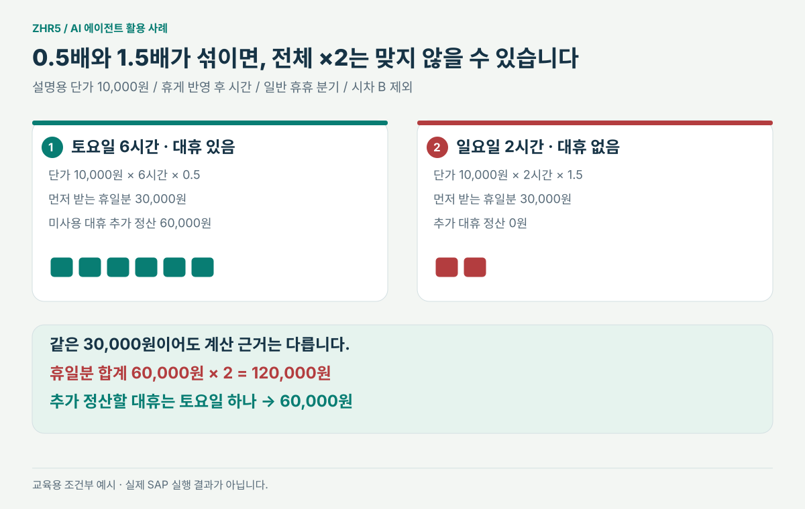
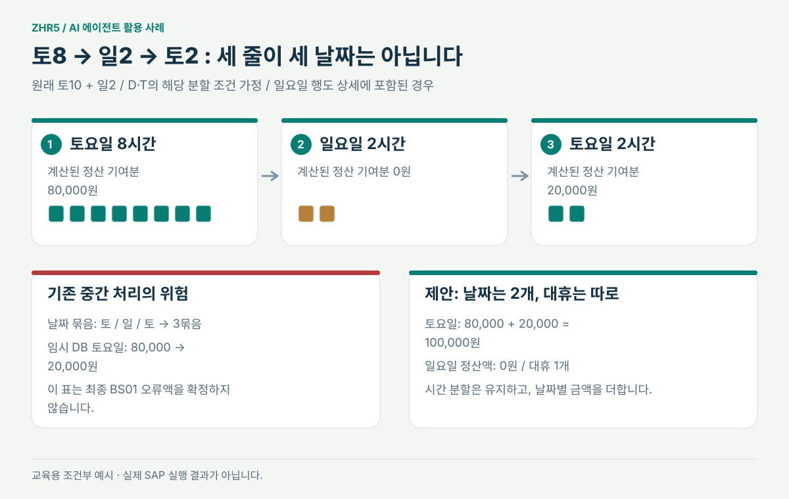
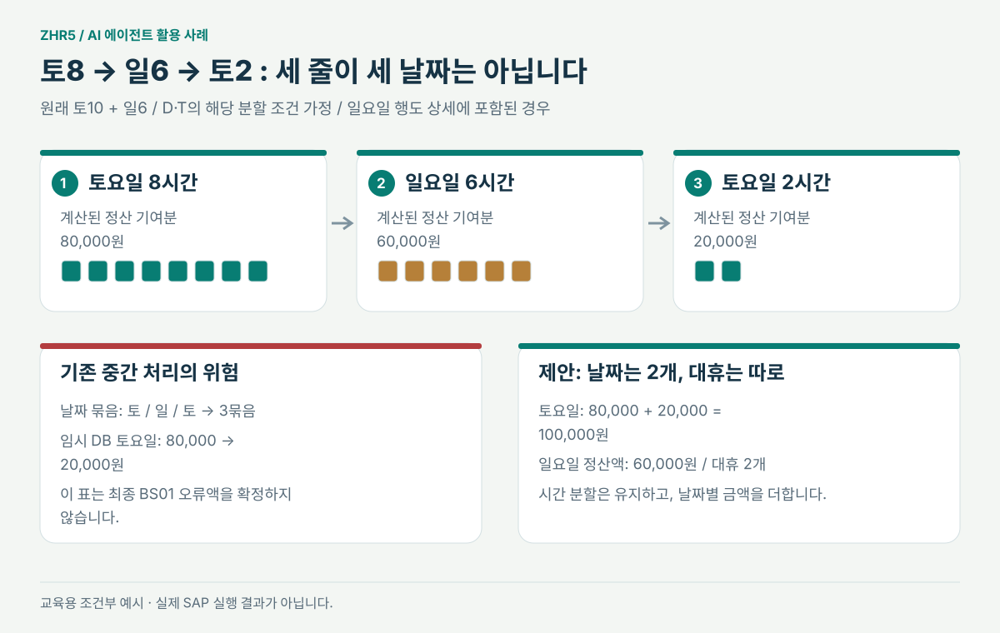
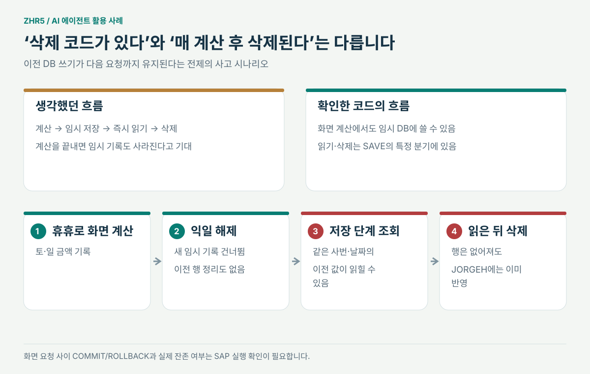
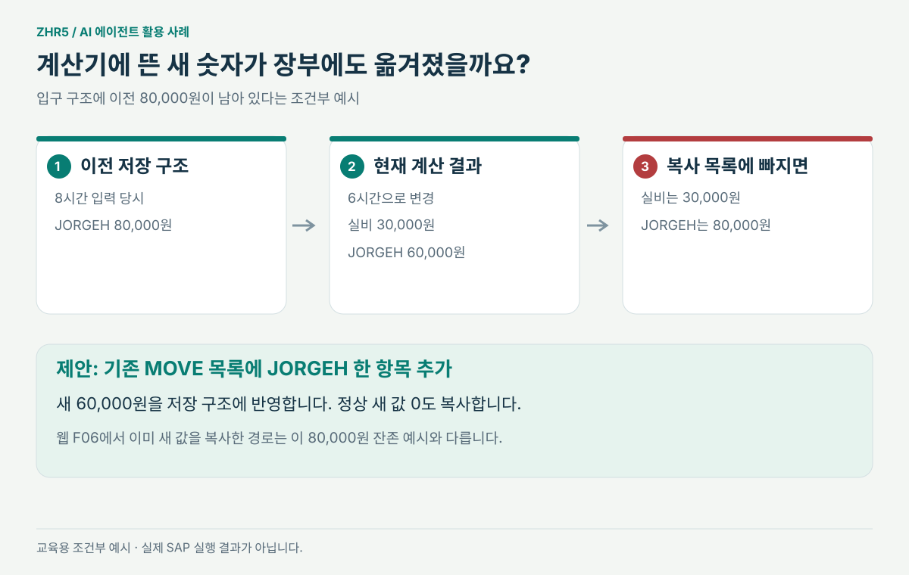

그림으로 이해 · 조건을 바꿔 보는 예시
두 날짜, 세 계산 줄,
그리고 대휴 한 개 또는 두 개
설명용 단가는 10,000원입니다. 시간은 휴게를 반영한 계산시간이며, 일반 휴휴 분기의 조건부 예시입니다. 시차 B의 별도 산식과 선택 CW에 그대로 적용하지 않습니다.
01 / 요율과 금액
먼저 받는 휴일분과 나중에 정산할 돈
대휴가 생긴 근무에는 먼저 0.5배를, 대휴가 없는 근무에는 1.5배를 계산하는 경우를 봅니다. 미사용 대휴의 추가 정산은 별도의 금액입니다. 이 둘을 합친 금액 전체를 무조건 두 배로 하면 안 됩니다.
먼저 받는 금액의 배율
먼저 받는 휴일분
그 날짜 대휴에 귀속할 추가 정산액
먼저 받는 금액의 배율
먼저 받는 휴일분
그 날짜 대휴에 귀속할 추가 정산액
추가 대휴 정산 목표 · 대휴 먼저 받는 휴일분 합계:
코드의 일반 경계는 계산시간 4.5시간 이상입니다. “출퇴근 5시간 중 휴게 30분”과 모든 입력의 “5시간 초과”를 같은 조건으로 취급하지 않습니다. 대휴 중복 등 다른 제한은 제외한 교육 예시입니다.

설명용 단가 10,000원 / 휴게 반영 후 시간 / 일반 휴휴 분기 / 시차 B 제외02 / 분할과 날짜 묶음
토요일이 뒤에 다시 나오면 무슨 일이 생길까요?
원래 토요일 10시간을 앞 8시간과 뒤 2시간으로 나눈 상황입니다. 새로운 2시간을 추가한 것이 아닙니다. 아래 세 계산 행이 실제로 만들어지고 일요일 행도 상세에 포함되는 조건을 가정합니다.
기존 임시 기록·그룹의 위험
인접 날짜를 세면 토 / 일 / 토 = 3묶음
임시 DB 토요일앞 80,000원을 뒤 금액으로 교체
임시 DB 일요일다른 날짜이므로 별도 행
중간 상태의 설명입니다. 최종 BS01 오류액을 이 숫자로 단정하지 않습니다.
제안: 날짜별로 합산·배분
실제 날짜는 2개 · 대휴는
토요일 JORGEH 목표
일요일 JORGEH 목표
합계 · 시간 분할은 유지
분할은 D·T 등에서 옵션·기준시간 초과·누계 조건을 충족할 때의 예시입니다. 확인한 선택 CW와 A의 휴일은 이 기준시간 분할에서 제외됩니다. B의 새 J는 별도 분기에서 계산되지 않을 수 있어 이 비영 금액 예시를 그대로 적용하지 않습니다.

원래 토10 + 일2 / D·T의 해당 분할 조건 가정 / 일요일 행도 상세에 포함된 경우
원래 토10 + 일6 / D·T의 해당 분할 조건 가정 / 일요일 행도 상세에 포함된 경우03 / 사용자 변경과 임시값
읽고 삭제해도, 이전 돈을 먼저 가져왔다면?
이전 DB 기록이 다음 화면 요청까지 유지된다는 전제입니다. 첫 단계의 80,000원·20,000원은 잔존 상태를 설명하기 위한 값이며, 특정 근무시간 조합의 계산 결과라고 주장하지 않습니다.
화면 재계산에서도 쓰기가 발생할 수 있고 DELETE는 SAVE의 특정 분기에 있습니다. 실제 화면 요청 사이 COMMIT/ROLLBACK과 운영 잔존 여부는 미검증입니다.

이전 DB 쓰기가 다음 요청까지 유지된다는 전제의 사고 시나리오04 / 계산과 복사
새 값이 계산됐다는 것과 저장됐다는 것은 다릅니다.

입구 구조에 이전 80,000원이 남아 있다는 조건부 예시짧은 확인 문제
토8→일2→토2는 3일 근무인가요?
아닙니다. 날짜는 토요일·일요일 2개입니다. 토요일 뒤 2시간은 원래 토10시간의 일부입니다.
신청번호를 키에 추가하면 토8·토2가 자동 합산되나요?
아닙니다. 같은 신청의 같은 날짜 두 행은 여전히 같은 키일 수 있습니다. 금액을 더하는 처리도 필요합니다.
CLEAR로 임시 DB의 잔존 행을 지울 수 있나요?
아닙니다. 작업 변수 초기화와 DB DELETE는 대상이 다릅니다.
단순 ×2는 휴휴이면 항상 틀리나요?
아닙니다. 양일 모두 0.5배인 예시는 맞을 수 있습니다. 0.5배와 1.5배가 섞인 어떤 금액을 두 배 하는지 봐야 합니다.
로컬 v700 문법 PASS면 SAP 오류가 해결됐나요?
아닙니다. 실제 데이터·DDIC·F05 재계산·저장·정산까지 SAP 실행 검증이 남아 있습니다.